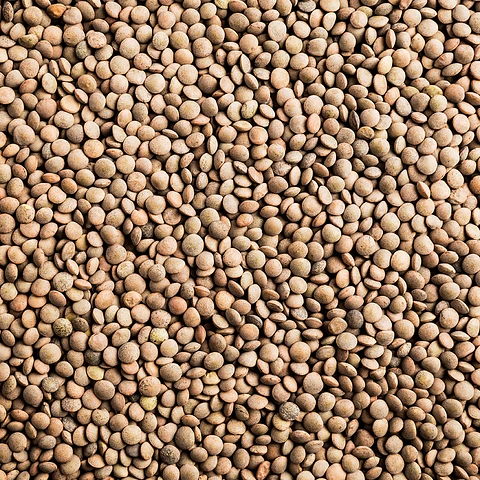
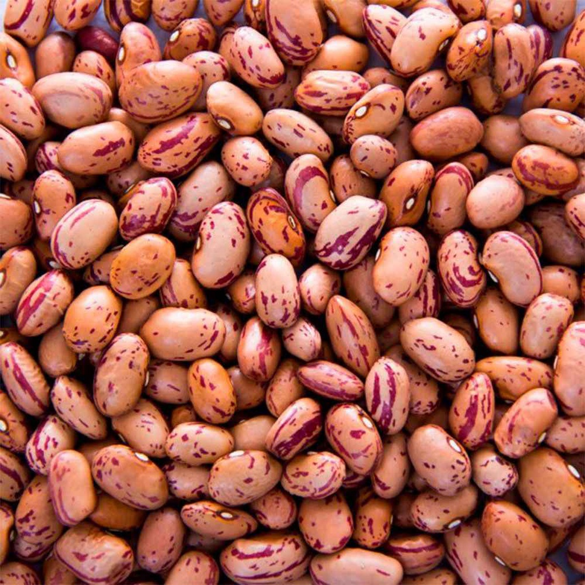
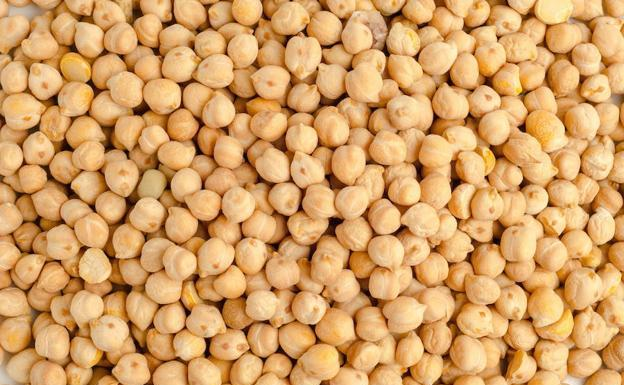
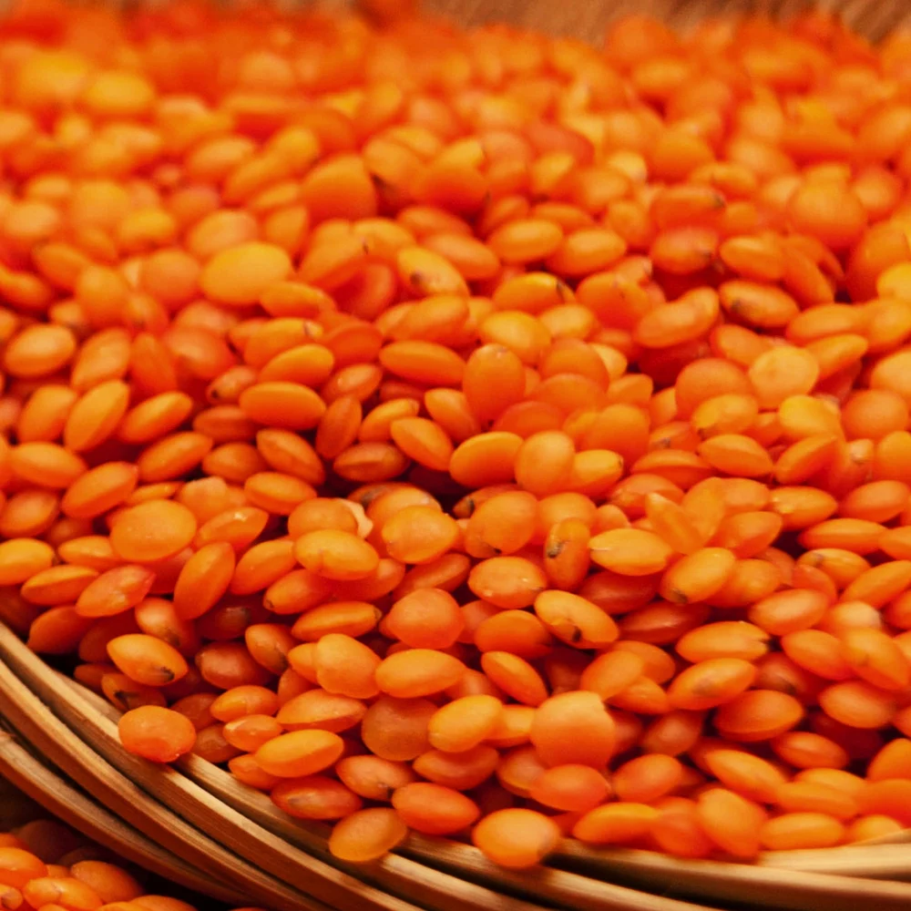

Legumbres tiernas desde el sur de Chile
Productos de cosecha reciente
|  |
Lentejas 4mm También conocidas como Lentejas Baby, con un sabor concentrado y una textura suave, logran una cocción en pocos minutos $2.300 / kilo |
|  |
Porotos Hallados Con un intenso sabor, se distinguen fácilmente por su color beige con estrías blancas. Perfectos para cualquie época del año. $2.200 / kilo |
|  |
Garbanzos pelados La única legumbre conocida como una "legumbre completa", no puede faltar en tu dieta. Disfrútalos en diferentes preparaciones, en todas ocasiones $1.900 / kilo |
|  |
Lentejas rojas De un llamativo color, estas delicias presentan un sabor suave y delicado, perfectas para gran cantidad de preparaciones $2.500 / kilo |